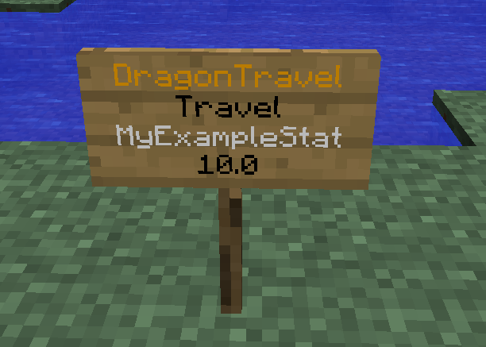
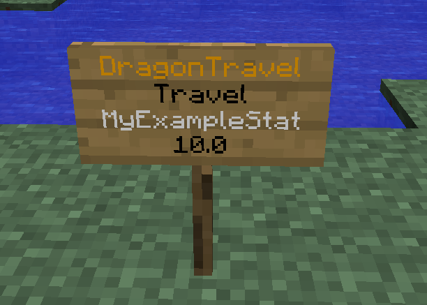
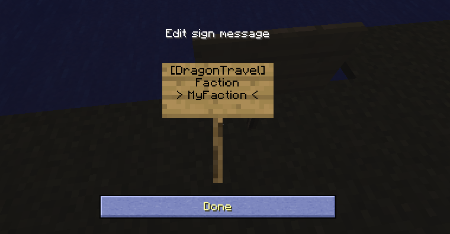
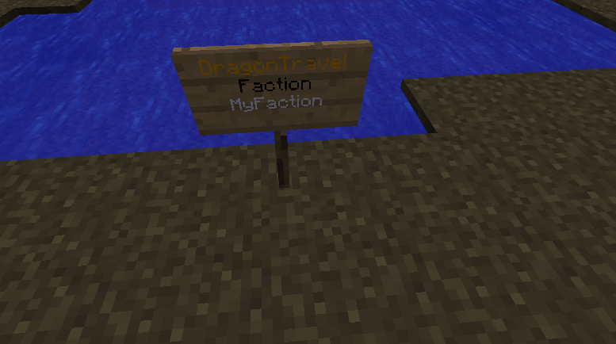

Signs¶
General¶
Signs give you the possibility to give players access to DragonTravel commands without them typing commands. It is therefore a great way to increase the level immersion for role play servers.
- At the moment, it is possible to bind the following actions to signs:
- Starting a travel to a station
- Starting a flight
- Starting a travel to the player’s faction’s home point
The basic layout of a sign in DragonTravel is the following:
[DragonTravel]
<Action>
<Target>
[Cost]
The fourth line which contains the costs is optional. If you have economy-payment activated and the fourth line is empty, the player is charged the default cost set in the config Costs have to be specified with a decimal seperator, even if you use payment via items (e.g. to charge a palyer 10 gold nuggets for a flight, specify “10.0” in the fourth line)
Travel Sign¶
This type of sign brings a player who clicks on it to the station specified on the sign
The following example sign brings the player to the station “MyExampleStat” which costs him 10 bucks (if payment by money is enabled or 10 of the specified resource if payment by resources is enabled).
 

{kind=link}
Flight Sign¶
This type of sign brings a player who clicks on it on the flight specified on the sign
The following example sign sends the player on the flight “TestyFlight” which costs him 20 bucks (if payment by money is enabled or 20 of the specified resource if payment by resources is enabled).


Faction Signs¶
Layout 1 (Faction specific)¶
This type of sign brings all members of the faction “MyFaction” who click the sign to their faction’s home. If a player is not a member of any faction or a member of a different faction he will get an error message.
 {kind=link}
{kind=link}
Layout 2 (Universal)¶
This type of sign brings all players who click it to their faction’s home. If a player is not a member of any faction he will get an error message.